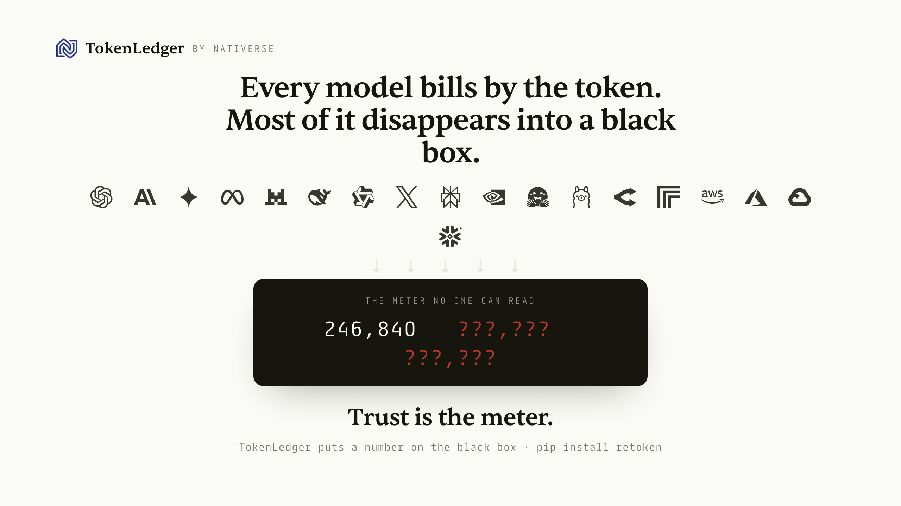

AI spend is a black box. Trust is the meter.
TokenLedger puts a number on how much of an AI bill is accountable, and how much is not. Open source, self-hosted. Re-count the output a provider bills, label every figure EXACT, BOUNDED, or UNVERIFIABLE, and measure the share that no one can check.
pip install "retoken[exact]" retoken demo # offline demo: plants discrepancies, flags them # open retoken_demo.html

What it can, and cannot, check
| Bucket | Confidence |
|---|---|
| Output tokens | EXACT ·re-counted with the model's own tokenizer, pinned by provenance |
| Input tokens | BOUNDED ·estimated within a band |
| Reasoning and cache | UNVERIFIABLE ·billed, never returned, most of a modern bill |
Re-counting the output is a consistency check that binds the bill to the delivered artifact. It is not an independent measure of true cost. The genuine value is measuring how much of the bill has any ground truth at all.
Full method and limits: known-limitations.md.
TokenLedger, by Nativerse · Apache-2.0 · pip install retoken